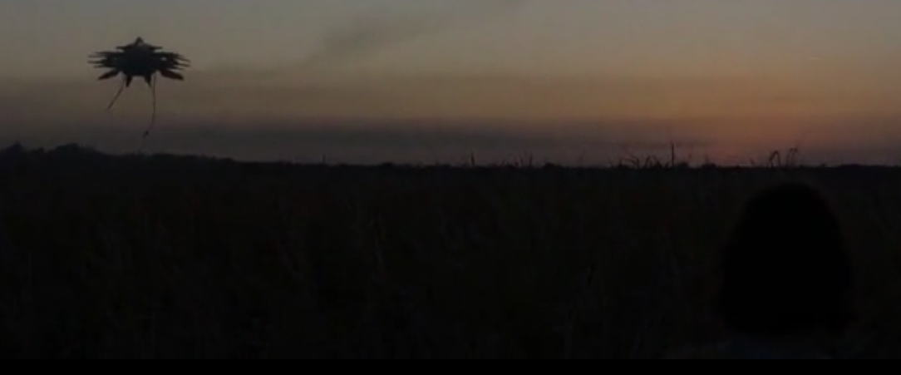
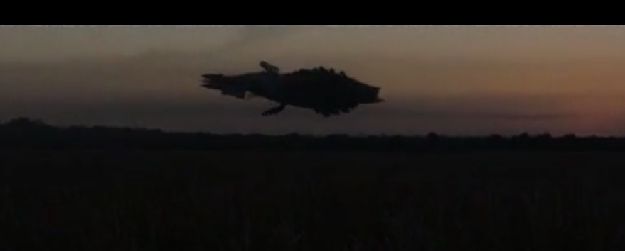

Tras un accidente de coche, una mujer se despierta en un refugio subterráneo con otros dos hombres, uno de los cuales asegura que la superficie está inhabitable, ya que ha habido un ataque con armas químicas a nivel mundial. La película ahonda en la relación entre estas tres personas y cómo aumenta la tensión entre ellos según avanza la historia. Finalmente, descubren que, aunque lo que decía inicialmente el hombre era falso, la tierra se encuentra efectivamente en un estado de excepción, con formas de vida alienígenas amenazando el status quo de la humanidad.
Trailer :
1:28:17
Necesidad 1.
Esta nave alienígena, que aparece ya al final de la película, tiene una forma dinámica y cambiante, que se transforma y adapta al entorno. Después, se observa que, en realidad, es un ser vivo, gigantesco y volador[1], con varios tentáculos y una mandíbula enorme, pero con un revestimiento que recuerda al de naves espaciales de otras películas de ciencia ficción. Podría inspirar a diseñadores a hacer dispositivos que cambien de forma dinámicamente y se adapten a su entorno o aquello que esté en contacto con ellos, etc..
 1:37:22
Necesidad 2.
Al final de la película se puede observar otra “nave” espacial, con un diseño algo diferente al de la primera, pero sin quedar claro si es también otro alienígena o se trata de una máquina. El diseño es innovador y recuerda a algunas naves de "La Guerra de las Galaxias"[2].Al igual que la primera, podría inspirar a los diseñadores a atreverse con diseños fuera de lo común y con un carácter semi-orgánico.
SmartPhones, sistemas de generación de atmósfera, Gramófono,VHS,automóviles.
Tanto las naves, como el ser alienígena que aparecen, son fruto de la imaginación del autor de la película. Se puede observar también un gas verde que emana de la nave, aparentemente corrosivo por los efectos producidos en la mujer que aparece en la película, pero no es posible afirmar si ese gas es inventado o no.
Ya que la película está ambientada en la época actual, en cuanto a su impacto a nivel tecnológico, lo más destacable es la representación de los alienígenas que aparecen al final del largometraje; pudiéndose ver una nave espacial gigantesca , similar a otras representaciones en el mundo del cine de ciencia ficción de naves alienígenas, pero con un marcado estilo propio .